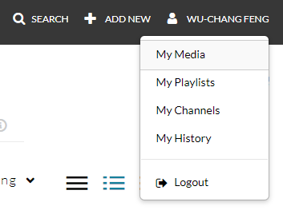
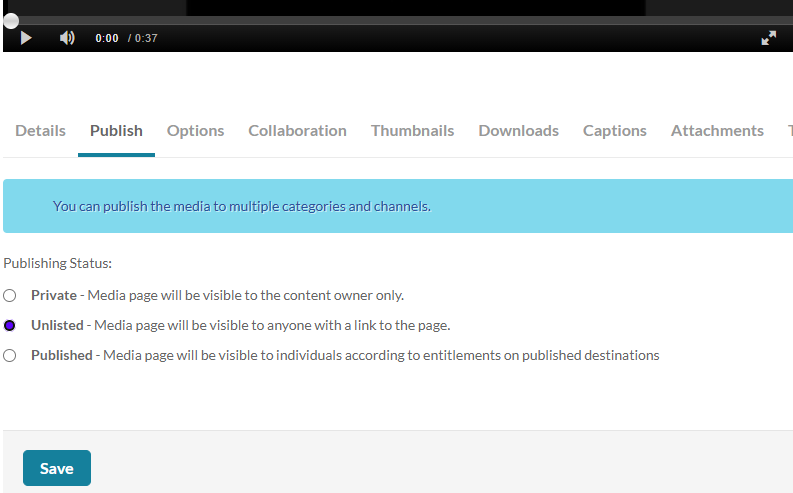

The goal of the final project is to perform a deep dive on any of the topics and exercises in this class. Specifically, the project may encompass any of the techniques covered for generative AI and LLMs towards solving problems in cybersecurity. Some ideas include:
After completing your project, you will create a narrated screencast that walks through what you have produced. Properly edit the screencast so that the walk-through is under 20 minutes. You may use software of your choice for the screencasts. Options include video conferencing applications such as Google Meet and Zoom or dedicated programs such as OBS Screen Recorder, QuickTime (MacOS), Screencast-O-Matic (Windows), or RecordMyDesktop (Linux). In addition, CaptureSpace Lite is available via PSU's Media Space (https://media.pdx.edu).
Upload your completed screencast on MediaSpace. Ensure that it is published as "Unlisted". To do so, visit MediaSpace and click on "My Media".

Click on the screencast video that has been uploaded. Then, in the tabs below, select the "Publish" tab, click on "Unlisted", and then "Save".

Find the video on MediaSpace, get its URL, and include it in a file called screencast_url.txt.
To submit your final project, create a single Zip file containing any project code, slide presentations, and the screencast_url.txt file containing the link to your screencast. Then, in Canvas, under the "Final Project" assignment, submit the file.
The rubric can be found below:
Instructions followed properly including project submission screencast length. |
Quality of screencast walkthrough. |
Reproducibility of project results (via code and/or exemplar submission). |
Level of functionality implemented or depth of analysis performed |
Project creativity |